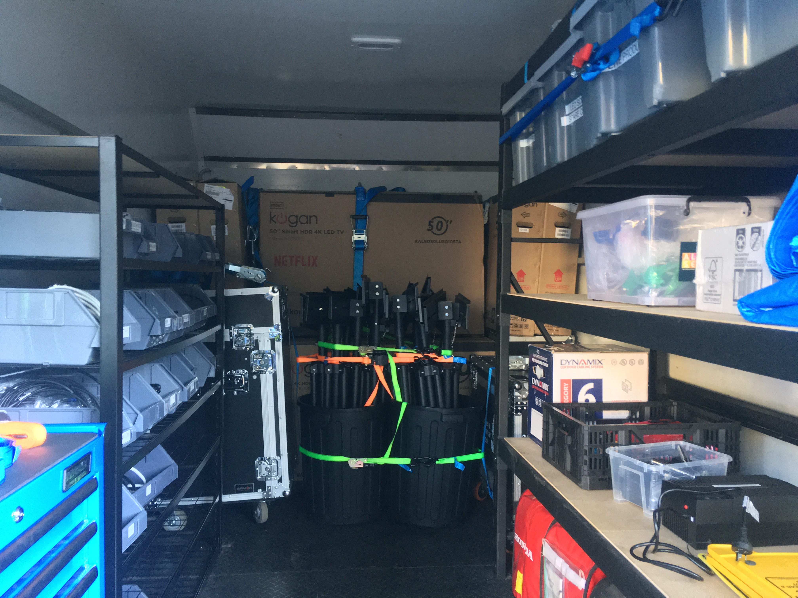
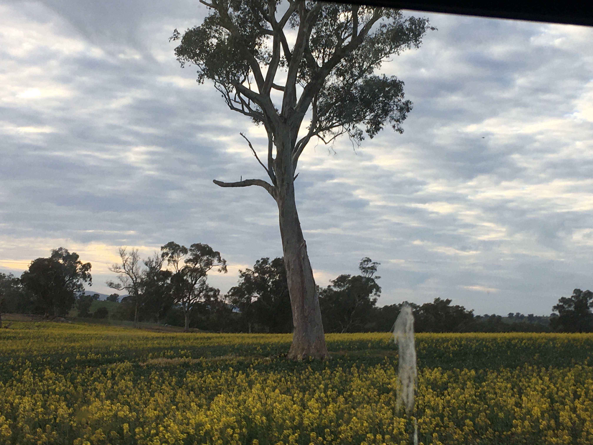
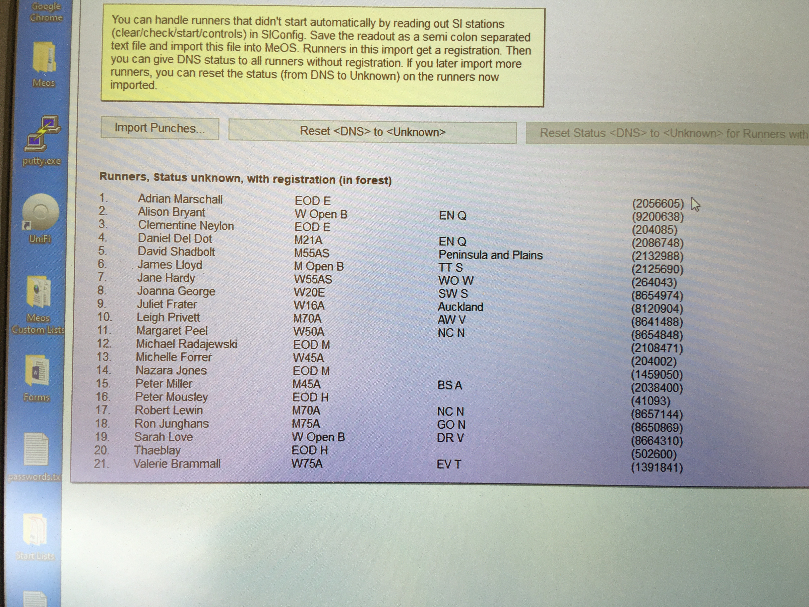

Day 1 - Transit Day
Today we drove to Wagga Wagga after checking that everything in the truck was secure.

Everything in the truck is secured down.
Currently driving to Gundagai to get some lunch. Here is where we were at 11:00:
Day 2 - Oceania Sprint - Wagga Wagga
Today the sprint event was at the Charles Sturt University main campus. There were many people with peoblems so I was innundated with problems. Overall it was a success and we have sorted out the problems before tomorrow (Hopefully). The dinner was nice, I had a chicken wrap from Schnitz:
Day 3 - Australian Long - Cootamumdra
Today we had to wake up at 4:00 so everyone was a bit moody. It was a 2-hour drive to the event so we arrived at Cootamundra at around 7. Setup was pretty quick because we knew the setup from yesterday. The runners came in slowly but gradually picked up. Henry, one of the people doing the timing, had a person offer to slip a $20 to remove 15 minutes from their time. We had a very quick pack up as we were staying at the same place as the event is at the same place tomorrow. Here is a photo of the screen and PA in full operation:
Day 4 - Oceania/Australian Relay - Cootamumdra
Today we woke up at 6:00 so it was a nice change from the really early starts so we got a full breakfast from the hotel. Mr Purcell, Angus and I arrived a few minutes before everyone else so we set up the LED Screen and took off the protection from the finish. Because we were at the same location two days in a row the infrastructure was pretty much all set up so we were ready to go. Things were pretty hectic at the finish tent (Henry, Kaelen and I) because the relays meant that the runners' data had to be sorted in a certain way and the orienteers changed their teams without telling us so that caused a lot of problems which I had to fix.

Crop fields that we drove past
on the way to the event.
The people that were out on the cameras (Sithum, Toby and Xander) who were working for Toph (The person in charge of Live Production) returned at the end of the day a lot less sunburned then yesterday and were much happier although quite tired. We ended the day going out to an Indian place for dinner. I had a Tikka Masala and a Lemon, Lime and Bitters. We all had some Naan Bread and Samosas to share. Overall I think we all had a great day.
Day 5 - Schools Sprint/Public Day 1 - Wagga Wagga
Today was the shortest day of them all. The event was at a school that was a four minute drive away from the hotel so the transit to the event was nice. There were two events in one day so we had to swap the event on the software halfway through. This caused some problems because there were still some runners out from the first event that arrived when we had converted to the second event. I was innundated with course changes so I didn't have time to eat lunch luckily we got pizza so I managed to eat a slice every few minutes. Kaelen and Henry got to have a break as the camera operators got back before 12:00, so Sithum and Xander took over. Unfortunately, my job is too complicated so nobody is able to take over for me except for Mr Purcell but he was working alongside me because there were so many changes as we were doing them for all three days. When we got back to the hotel we went to the pool because we had a free afternoon.
We had a barbeque next to the pool for dinner. Toby was put in charge of cooking the sausages and burned every single one! It was fine because it was only a light burn and they were very well cooked on the inside. After dinner, we went out on a walk and had some ice cream from Gelatissimo.

Available Ice Creams
Day 6 - Schools Long/Public Day 2 - Wagga Region
Today was utterly hectic. At the end of the day, we were frantically searching through a computer in order to find a file and activate it with our power having only 10 minutes remaining! But before that, the day started off pretty slow because it was a long-distance event, the finishers came in in a slow trickle so we had enough time to have a calm lunch break. Toby went out to his remote camera but there was a branch in the way of the shot. In the process of cutting the branch away, he also cut his hand so he had to come back to the finish tent to get that sorted out. It was all sorted out by Mr Gray in about 10 minutes and Toby was fine so he went back out to his camera until midday when the cameramen stopped working. All of the finishers seemed to want to go into Xander's lane so to evenly spread out the people, Henry slowly made the entrance to Xander's lane smaller and his bigger but people still were only going to his. Eventually, people managed to figure it out and there was a pretty even spread.
Mr Purcell decided to go out on a run because we were handling things so well at the finish tent. Everything went smoothly while he was out so that was a relief. It turned out that Mr Purcell mispunched! Mr Purcell then left with Henry and Kaelen to sort out the teams for the relay tomorrow (Which is an essential but tedious task). This meant that when packing up the finish there was only me that knew how to and seeing as if you pulled the wrong cable you would destroy the system, I sort of had to pack it up all by myself. Once we had packed it all away and were almost ready to go, Stephen Goggs (The Oceania coordinator) asked for the names and courses of the five people who were still out. Under high pressure from Stephen Goggs, We pulled out the essential items from the truck (which were, of course, the heaviest and most complicated) and we powered everything up.
The next problem arose when I tried to start up the server that runs the timing system. I knew the command that started the server but I didn't know where to run it. Sithum was invaluable as he had worked a bit on the results screens so he knew all of the file paths. Sithum navigated me to the correct spot then I started up the server. I then opened the timing software and showed Stephen Goggs who was still out and by the decisions of the croud of people around me they decided that everyone was backand that we could leave. We then safely packed up the system and then left. When we got back to the hotel and when Mr Purcell was back from sorting out the relays, we discussed what we had to do and it turns out that we only needed the one computer and not the server or any other tech. We then went out to dinner to Schnitz again.
Day 7 - Schools Relay/Public Day 3 - Wagga Region
Today was pretty similar to yesterday. We went to breakfast at 6:00, left at 7:15 and set up as usual. Kaelen stayed in at the finish tent today as he was feeling unwell yesterday. He had to stop work halfway through the day so Xander took over and Henry kept going. The day continued as usual. We had subway for lunch. I had every topping except for a few things that I didn't like. We had a much calmer finish today than what we had yesterday. Kaelen was totally out of action. His parents came down to see if he was okay. He seems to be okay now. He is currently having a rest. It was probably heatstroke. We went out for dinner without him as he was with his parents. We went to an Italian resteraunt. I ordered a lagagne but they were out. I instead ordered spaghetti bolognese with a lemon-lime and bitters.
I have also uploaded all of the videos Alex and Angus have made over the last few days here.
Day 8 - Transit Day
Today we drove to Wangaratta after a very late breakfast at 8:30. It was very nice to have a sleep in although I still woke up at 6:00, it was nice to have some free time in the morning. We headed off towards Wangaratta at 9:00 and arrived at a rest stop to have a break for lunch where we had KFC. We arrived at the location of tomorrow's event and set everything up in preparation. We then arrived at our new hotel at 6:00. Toby, Sithum and I were sharing a room. We went out for dinner at an Indian place called Tandoori Paradise. I had a Tikka Masala and a Lemon Lime and Bitters. After we got back for dinner, as the pool was so nice, we decided to go for a swim. It was very warm and the spa was even hotter which was a nice change from our last hotel.

Preparing for the event tomorrow.
Some photos have been uploaded at photos.codecadets.com.
Day 9 - Oceania Long - Wangaratta
Kaelen is back to normal today. We arrived at the event with everything set up so we were easily able to start everything up. Just after out first finisher went through the finish, a giant huntsman spider appeared in the finish area. I immediately made a break for the truck (about 20 meters away) and notified the teachers via radio. Mr Gray promptly killed it. Things returned to normal although I was a bit on edge for the rest of the day. The day was pretty normal except for when Mr Purcell left for about an hour when everything randomly shut down and the results stopped displaying. I managed to semi-fix the problems with the results until Mr Purcell arrived back. At the end of the day, we bumped out of the event and then immediately bumped in to the next event. We were all pretty tired by the end of this so we went home to the hotel, had McDonalds and then went for a short 15 minute swim.
Day 10 - Oceania Medium - Beechworth
Today is Sithum's birthday! We went to breakfast and there was a cake. We only ate it after dinner but we celebrated his birthday there. We gave it to the hotel to have it later in the evening. Today we arrived at the event with everything set up from yesterday. The event organiser put 1000 apples at the end of the finish tent that every finisher that came through could take one. Everyone in the finish tent took two. The day continued as normal but finished at 2:00. We securely packed the truck in preparation for the drive home. When we got back to the hotel we had a nice, long time swimming in the pool. We pulled out the GoPros and had some fun taking some underwater photos. After that, we went up to the meeting room that we had and we had pizza for dinner.

Meos, the timing system.